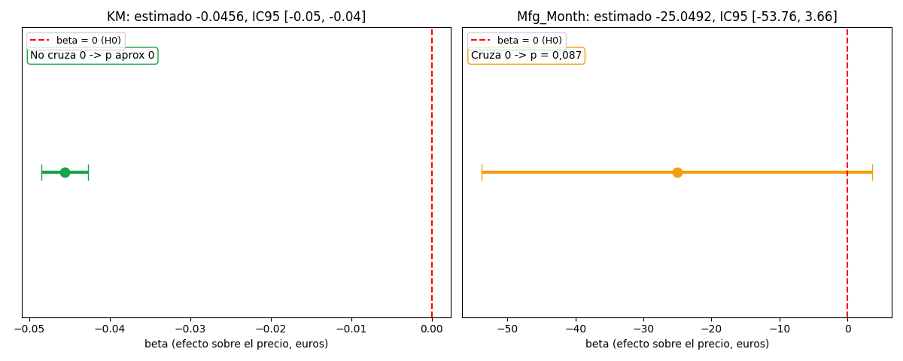

Bloque D · Regresión lineal, selección y regularización · Lección 0056 · mié 9 sep
Intervalos de confianza: ¿dónde vive el β real?
Win de hoy: leer las columnas [0.025, 0.975] del summary
(cátedra, clase de regresión lineal, p. 22): KM [−0,0485, −0,0427] no cruza el 0 → sólido;
Mfg_Month [−53,76, +3,66] lo cruza → dudoso, mismo veredicto que su p = 0,087.
1 · Las dos columnas olvidadas del summary
La segunda parte de la salida (lección 0042) termina con dos columnas
que todavía no leímos: [0.025 y 0.975]. Son los extremos del
intervalo de confianza al 95 % (IC95)
de cada coeficiente: el rango donde creemos que vive el β real. Si repitieras el estudio con otros 1436 Corollas,
el 95 % de esos intervalos atraparía al verdadero efecto. No es «la probabilidad de que el β esté adentro»
(el β está fijo; lo que baila es el intervalo), sino un rango honesto para la estimación puntual:

Regenerar la figura (mismo resultado versionado en assets/img/toyota/):
python scripts/make_figures.py --only intervalos-confianza2 · La regla de oro: cruza el 0 ⟺ p > 0,05
El IC95 y el p-valor son el mismo juicio en dos idiomas. Si el intervalo cruza el 0, el «efecto nulo» sigue siendo creíble → p > 0,05 → no se rechaza H0. Si queda todo de un lado, el 0 es increíble → p < 0,05 → efecto significativo:
| Variable | Estimado | IC95 | p (0042) | Veredicto |
|---|---|---|---|---|
| KM | −0,0456 | [−0,0485, −0,0427] | ≈ 0 | Sólido: todo negativo |
| Mfg_Month | −25,05 | [−53,76, +3,66] | 0,087 | Dudoso: cruza el 0 |
3 · El ancho es la precisión (y cómo achicarlo)
Compará anchos: KM abarca 0,0058 €/km (cada km resta entre 4,27 y 4,85 céntimos — precisión quirúrgica); Mfg_Month abarca 57,4 €/mes. Un IC angosto dice «sé dónde está»; uno ancho, «apenas lo ubico». ¿Qué achica un intervalo? Más autos (n), menos ruido y menos colinealidad (lección 0019: predictores que se pisan inflan la varianza de cada β). Por eso el IC95 se lee junto al modelo, nunca solo.
import pandas as pd, numpy as np, statsmodels.api as sm
df = pd.read_csv("../ToyotaCorolla.csv")
dl = df[df.select_dtypes(include=[np.number]).columns].copy()
basura = ["Id","Met_Color","Airbag_1","Airbag_2","Gears","Mistlamps","Radio_cassette",
"Power_Steering","Backseat_Divider","Central_Lock","Radio","cc","Doors","Cilynders",
"CD_Player","Airco","Automatic","Tow_Bar","Boardcomputer","Metallic_Rim","Mfg_Year",
"Mfr_Guarantee","Cylinders","ABS","Sport_Model","Age_08_04"]
dl = dl.drop(columns=[c for c in basura if c in dl.columns]).fillna(dl.mean())
m = sm.OLS(dl["Price"], sm.add_constant(dl.drop(columns=["Price"]))).fit()
print(m.conf_int().round(4).to_string()) # columnas [0.025, 0.975]4 · Quiz (auto-chequeo inmediato)
5 · Fuente primaria y cierre
Para profundizar (1 fuente): Diez, Barr & Çetinkaya-Rundel, OpenIntro Statistics — cap. 4–5 (inferencia: intervalos de confianza). Más contexto en RESOURCES.
¿Algo no quedó claro? Preguntame al agente: por qué cruzar el 0 equivale a p > 0,05, qué ancho esperarías con 200 autos en vez de 1436, o cómo se vería el IC de una variable con VIF enorme.
Orden Bloque D: venís de 0024 (primera parte) y 0042 (t y p). Siguiente: 0025 · Diagnóstico OLS — residuos, QQ y puntos influyentes.